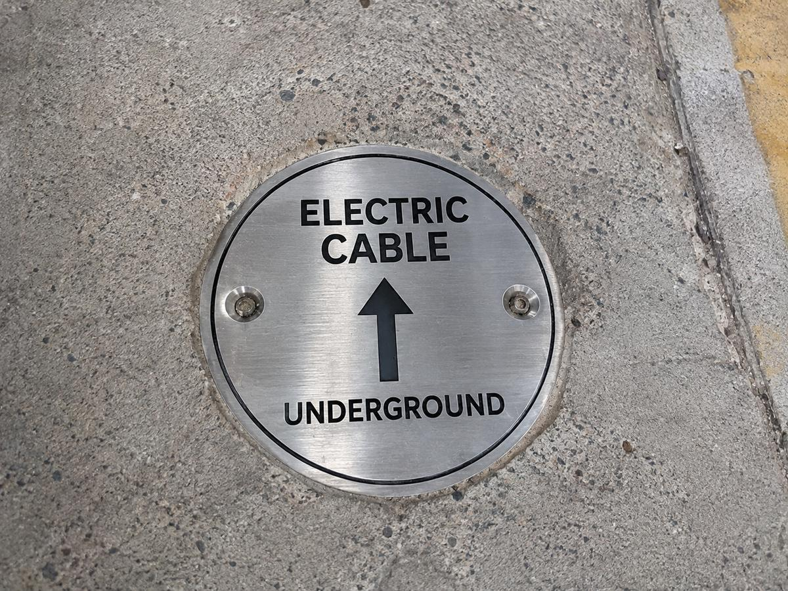
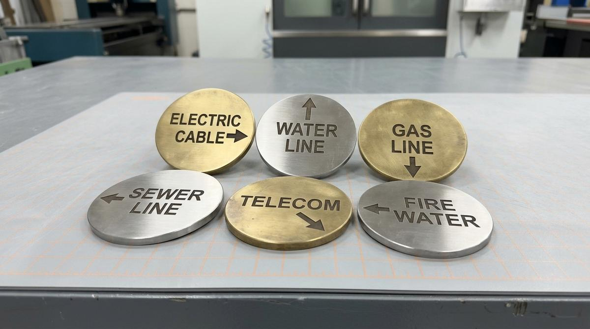

علامة أرضية دائرية
قرص براص أو ستانلس بساق تثبيت يُغرس في الخرسانة أو الأسفلت.
قبل أي حفر في الموقع، يجب أن يعرف الجميع ما الذي تحت الأرض. نصنع علامات المسارات من البراص والستانلس، محفورة بنوع الخدمة وسهم الاتجاه، لتُثبَّت في الأرضيات والأرصفة والجدران وتبقى ظاهرة لسنوات.

الكيابل والأنابيب المدفونة لا تُرى بعد ردم الحفريات وتشطيب الأرضيات. وعند أي أعمال لاحقة — توسعة، صيانة، أو تركيب جديد — يصبح الحفر العشوائي خطراً حقيقياً: قطع كيبل جهد عالٍ أو خط غاز قد يسبب حادثاً وخسائر كبيرة.
علامات المسارات تحل هذه المشكلة: تُثبَّت على سطح الأرض فوق المسار على مسافات منتظمة وعند كل انعطاف أو تفرّع، وتحمل نوع الخدمة وسهماً يوضح الاتجاه. ولأنها تُداس وتتعرض للشمس والأمطار، نصنعها من البراص أو الستانلس مع حفر عميق.
قرص براص أو ستانلس بساق تثبيت يُغرس في الخرسانة أو الأسفلت.
تُثبَّت بالبراغي على الأرصفة أو قواعد الخرسانة.
على الجدران والأسوار حيث يمر المسار بجانبها.
مسارات المواقف والمخارج والمرافق داخل المجمعات.
اللوحات الإرشاديةعلامات واضحة بتحذير مزدوج لمسارات الجهد العالي.
لون ورمز مختلف لكل خدمة لتفادي الالتباس.
| المادة | المميزات | الأنسب لـ |
|---|---|---|
| براص | لا يصدأ، يغمق بلون طبيعي، الحفر يبقى واضحاً | الأرصفة والطرق والمواقع الخارجية |
| ستانلس 316 | الأقوى ضد الملوحة، مظهر عصري | المناطق الساحلية والمصانع |
| ألمنيوم | خفيف واقتصادي | اللوحات الجدارية والداخلية |
للعلامات الأرضية نرشّح حفراً عميقاً حتى يبقى النص مقروءاً رغم الاحتكاك والمشي عليه.
 براص وستانلس
براص وستانلس
أسهم الاتجاهالصور رسومات ونماذج توضيحية لإمكانيات الخدمة، وليست أعمالاً منفّذة لعملاء.
ملف شعار، صورة، أو حتى قائمة نصوص في إكسل — مع المقاس والكمية ومكان الاستخدام.
نرسل لك معاينة رقمية بالشكل النهائي وسعراً واضحاً قبل أي تنفيذ.
يبدأ التنفيذ خلال 6 ساعات من اعتماد المعاينة، مع عيّنة أولى للكميات الكبيرة.
فحص 100% للنصوص والأرقام قبل التسليم، مرتّبة ومرقّمة حسب قائمتك.
تعريف الكيبل نفسه عند طرفيه وداخل غرف التفتيش.
اذهب إلى الصفحةترقيم المحابس على خطوط المياه والغاز.
اذهب إلى الصفحةالمادة الكلاسيكية للعلامات الخارجية.
اذهب إلى الصفحةالعلامة الدائرية تأتي بساق أسفلها تُغرس في ثقب بالخرسانة أو الأسفلت مع مادة لاصقة إيبوكسي، أو تُثبّت ببراغي على السطح. نحدد نوع التثبيت حسب سطح الموقع.
يُحدد ذلك عادة في مواصفات المشروع أو اشتراطات الجهة المالكة للخدمة: علامة على مسافات منتظمة، وعند كل انعطاف وتفرّع ونقطة دخول للمبنى. أرسل المخطط ونقترح العدد والأسهم المطلوبة.
نعم، يُحفر الشعار أو رقم المشروع أو رقم الهاتف للطوارئ على العلامة إلى جانب نوع الخدمة والسهم.
نعم، يكتسب البراص طبقة داكنة طبيعية (باتينا) تحميه، لكن الحفر العميق يبقى واضحاً. إن كنت تفضّل لوناً ثابتاً فالستانلس 316 هو الخيار.
اذكر أنواع الخدمات والعدد والمادة المفضلة وطريقة التثبيت.
أرسل التفاصيل، وتصلك معاينة وعرض سعر في نفس يوم العمل غالباً.